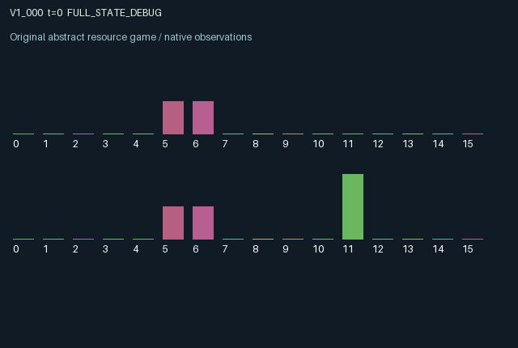

V1_000 / LEGACY_ARRAY
Window v1 · Delayed pledges with endogenous credibility
Delayed pledges with endogenous credibility.
Release verification episode
Untrained uniform legal actions. Actual JAX state sampled along the full original episode; full-state debug camera. No human performance or learning claim.

Run this game
crucibles play --game v1_000
Start Python locally, then open the address printed by the terminal. Installation, multiplayer, takeover and keyboard controls →
Objective, rewards & ending
Exact task contract
{
"objective": "Delayed pledges with endogenous credibility; accumulate original per-agent rewards under mechanism.md.",
"natural_termination": "Original t >= 32 horizon.",
"exact_transition_and_reward_source": "def raw_step(self, key, state, actions):\n # 0 wait; 1 open promise; 2 work; 3 endorse partner; 4 withdraw promise.\n active = state['due'] > 0\n opened = (actions == 1) & (~active)\n effort = (actions == 2) & active\n withdrawn = (actions == 4) & active\n endorsement = (actions == 3).astype(jnp.float32)\n work = jnp.minimum(2.0, state['work'] + effort.astype(jnp.float32))\n mature = (state['due'] == 1) & (~withdrawn)\n fulfilled = mature & (work >= 2.0)\n broken = (mature & (~fulfilled)) | withdrawn\n strength = 0.3 + 0.5 * state['trust'] + 0.2 * state['escrow']\n received = jnp.roll(fulfilled.astype(jnp.float32) * strength, 1)\n damage = jnp.roll(broken.astype(jnp.float32) * (0.2 + state['escrow']), 1)\n rewards = jnp.tanh(received - damage + 0.25 * fulfilled.astype(jnp.float32)\n - 0.15 * effort.astype(jnp.float32) - 0.1 * endorsement\n - 0.25 * broken.astype(jnp.float32)).astype(jnp.float32)\n due = jnp.where(opened, 3, jnp.maximum(0, state['due'] - 1))\n due = jnp.where(withdrawn, 0, due).astype(jnp.int32)\n next_state = {'t': state['t'] + jnp.array(1, jnp.int32), 'due': due,\n 'work': jnp.where(due > 0, work, 0.0).astype(jnp.float32),\n 'trust': jnp.clip(state['trust'] + 0.15 * fulfilled - 0.25 * broken, 0.0, 1.0),\n 'escrow': jnp.where(due > 0, jnp.minimum(1.0, state['escrow'] + jnp.roll(endorsement, 1) * 0.5), 0.0),\n 'last': fulfilled.astype(jnp.float32) - broken.astype(jnp.float32)}\n done_all = next_state['t'] >= 32\n dones = jnp.full((2,), done_all, dtype=jnp.bool_)\n info = {'done_all': done_all, 'legal_mask': self.legal_actions(next_state)}\n return self.observe(next_state), next_state, rewards, dones, info"
}Declared per-step reward bounds: -1.0 to 1.0. Observability: source_defined.
Rules
Original mechanism document (historical status wording retained)
Delayed pledges with endogenous credibility. Actions open a three-transition promise, supply two units of work, endorse the other agent with escrow, or withdraw. At maturity a completed promise benefits its recipient in proportion to the sender's accumulated credibility and endorsement; failures damage that recipient and reduce sender credibility. Endorsement is costly and increases exposure. The work clock and endorsement timing create action-history dependence. Both agents can change the other's delayed payout and their own persistent credibility. All states are initialized; work, trust and escrow are bounded. tanh maps the finite sum of delivery, failure and effort terms into [-1,1]. Constant all-legal actions include ineffective actions when their prerequisite is absent. No effectiveness or equilibrium claim has been tested.
Commands
Roles & abilities
agent_0 Original window-v1 agent; abilities and private parameters follow the original mechanism and observe()
agent_1 Original window-v1 agent; abilities and private parameters follow the original mechanism and observe()
Observation permissions
Training receives only the original observation rows. Role cameras use declared visibility; debug cameras are explicitly marked. Local benchmark records log debug exposure and role takeover history.
Exact observation layout
[
{
"slice": [
0,
16
],
"visibility": "exact original observe() below",
"source_code": "def observe(self, state):\n obs = jnp.zeros((2, 16), dtype=jnp.float32)\n obs = obs.at[:, 0].set(state['t'] / 32.0)\n obs = obs.at[:, 1].set(state['due'] / 3.0)\n obs = obs.at[:, 2].set(jnp.roll(state['due'], 1) / 3.0)\n obs = obs.at[:, 3].set(state['work'] / 2.0)\n obs = obs.at[:, 4].set(jnp.roll(state['work'], 1) / 2.0)\n obs = obs.at[:, 5].set(state['trust'])\n obs = obs.at[:, 6].set(jnp.roll(state['trust'], 1))\n obs = obs.at[:, 7].set(state['escrow'])\n obs = obs.at[:, 8].set(jnp.roll(state['escrow'], 1))\n obs = obs.at[:, 9].set(state['last'])\n obs = obs.at[:, 10].set(jnp.roll(state['last'], 1))\n obs = obs.at[:, 11].set(jnp.arange(2, dtype=jnp.float32))\n return obs"
}
]Entity visibility & attributes
[]
Actual verification & provenance
Per-game execution receipt
{
"game": "v1_000",
"status": "PASS",
"verification_revision": 2,
"source_sha256": "673a0279c9fcbfbf5a8f4378a7b67d8c533a2b7a1d085e061153ba2800674f33",
"seed": 20261101,
"runtime": {
"jax": "0.4.38",
"numpy": "1.26.4",
"devices": [
"TFRT_CPU_0"
]
},
"dimensions": {
"num_agents": 2,
"observation_size": 16,
"num_actions": 5,
"max_steps": 32
},
"checks": {
"eager_reset": {
"status": "PASS",
"seconds": 0.31888914108276367
},
"observation_spaces_legal_masks": {
"status": "PASS",
"seconds": 0.13518691062927246
},
"eager_step": {
"status": "PASS",
"seconds": 0.6243903636932373
},
"jit_reset": {
"status": "PASS",
"seconds": 0.10355758666992188
},
"jit_step": {
"status": "PASS",
"seconds": 0.23696637153625488
},
"eager_jit_integer_parity_float_measurement": {
"status": "PASS",
"seconds": 0.0005061626434326172
},
"jit_vmap_reset": {
"status": "PASS",
"seconds": 0.12529540061950684
},
"jit_vmap_step": {
"status": "PASS",
"seconds": 0.2640504837036133
},
"outer_autoreset_api": {
"status": "PASS",
"seconds": 0.3109617233276367
},
"full_original_horizon_episode_and_render": {
"status": "PASS",
"seconds": 0.8728353977203369
}
},
"human_scores": null,
"browser_controls": "PENDING",
"failures": [],
"elapsed_seconds": 4.544575214385986,
"float_parity_max_abs": 0.0,
"numerical_parity": "EXACT",
"raw_terminal_absorbing": "NOT_PART_OF_ORIGINAL_LEGACY_CONTRACT",
"terminal_outer_reset": "PASS",
"episode_steps": 32,
"scripted_random_returns": [
-1.8023202121257782,
-1.4456260055303574
],
"terminal": true,
"demo_information": "FULL_STATE_DEBUG",
"demo_frames": 33,
"render_roles_checked": 2
}Chromium control verification
{
"game": "v1_000",
"status": "PASS",
"human_scores": null,
"engineering": true,
"checks": [
"catalog_selected_and_real_native_reset",
"dom_queue_and_native_step",
"second_participant_ownership_and_native_joint_step",
"all_roles_individually_controllable_no_role_cap",
"explicit_debug_camera",
"release_to_pure_ai_without_reset",
"close_session_preserves_log"
],
"ui_sha256": "314c83040b7b2bfaa517fa4b20c9861a6c37a1bc689a6e61179218685c1d47e3",
"keyboard": "NO_LEGAL_CARDINAL_COMMAND_FOR_ROLE0_AT_RESET",
"seconds": 5.2812371253967285
}Original identity and file hashes
{
"id": "v1_000",
"key": "v1_000",
"title": "Window v1 · Delayed pledges with endogenous credibility",
"summary": "Delayed pledges with endogenous credibility.",
"tags": [
"historical window-v1"
],
"family": "legacy_array",
"dimensions": {
"num_agents": 2,
"observation_size": 16,
"num_actions": 5,
"max_steps": 32
},
"source_sha256": "673a0279c9fcbfbf5a8f4378a7b67d8c533a2b7a1d085e061153ba2800674f33",
"manifest_sha256": "776c8ef3ccc5d4d5031532d9b161c72ba043521d041b727cacc79b0097d67f25",
"files": [
{
"file": "candidate.py",
"bytes": 3277,
"sha256": "673a0279c9fcbfbf5a8f4378a7b67d8c533a2b7a1d085e061153ba2800674f33",
"origin": "work/exp_2/astra_generation/window_v1/candidate_00000/attempt_00/candidate.py"
},
{
"file": "mechanism.md",
"bytes": 842,
"sha256": "4c7fcce6162c7fb85c9b3bd592d2aaba545389b80053dd27c03bd0bc7a824250",
"origin": "work/exp_2/astra_generation/window_v1/candidate_00000/attempt_00/mechanism.md"
}
],
"original_status": "EARLIER_WINDOW_V1_SOURCE",
"original_namespace": "astra_generation/window_v1",
"original_proposal_index": 0,
"original_saved_replay": false,
"release_validation": "PASS",
"human_scores": null,
"browser_validation": "PASS"
}